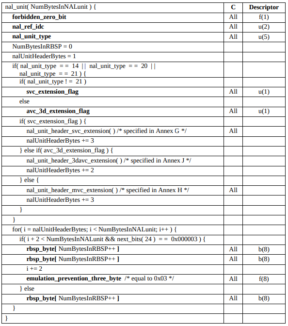
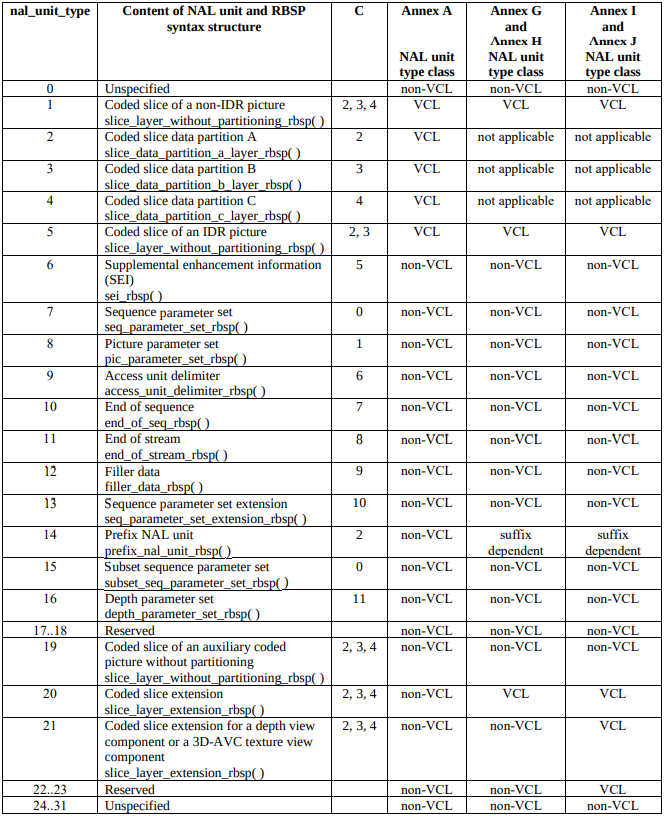
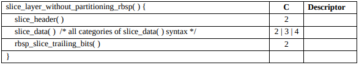
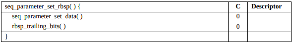
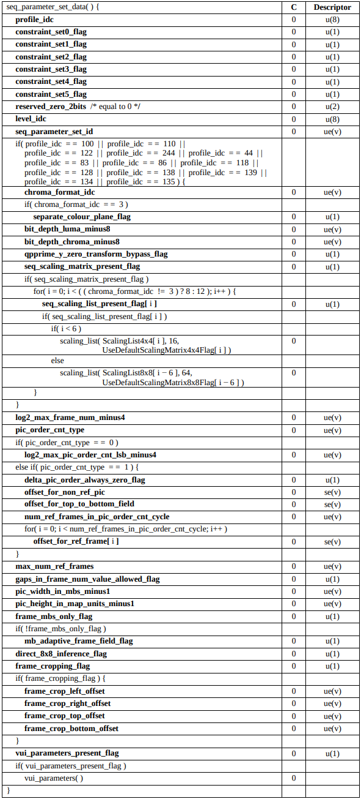
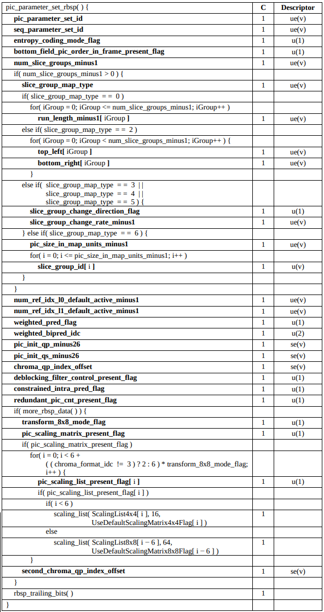
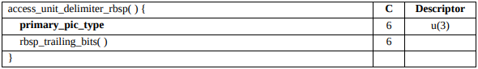

H.264 Data format - Access unit and NAL unit
H.264, also known as Advanced Video Coding (AVC), is one of the most widely used video compression standards in the world. Developed by the ITU-T Video Coding Experts Group and the ISO/IEC Moving Picture Experts Group, H.264 is designed to deliver high-quality video at lower bitrates, making it ideal for streaming applications.
This codec achieves its efficiency through a variety of techniques, including predictive coding, motion compensation, and variable block-size segmentation. H.264 organizes video data into Access Units, which are composed of Network Abstraction Layer (NAL) units. These NAL units carry the actual encoded video data along with necessary metadata, allowing for flexible and efficient video streaming.
Due to its adaptability and support for a wide range of resolutions and bitrates, H.264 has become the backbone of many streaming services, from video-on-demand platforms to live broadcasts. Understanding its structure and how data is encapsulated within the codec is crucial for anyone working with video streaming technologies.
Access Unit
A set of NAL units that are consecutive in decoding order and contain exactly one primary coded picture. In addition to the primary coded picture, an access unit may also contain one or more redundant coded pictures, one auxiliary coded picture, or other NAL units not containing slices or slice data partitions of a coded picture. The decoding of an access unit always results in a decoded picture
Basing on the definition provided by the ITU-T documentation the access unit is the smallest unit of data that can be independently decoded to produce one complete video frame. Access unit encapsulates all necessary information for decoding the picture.
The minimal access unit must contain one primary coded picture (I frame). In addition to the I frame it is possible to send another type of data such:
- redundant coded picture - Coded representation of a picture or a part of a picture which does not have to contain exactly the same amount of macroblocks as primary coded picture.
- auxiliary coded picture - A picture that can supplement the primary coded picture which can be decoded with other data not specified in the International Standard (ITU-T). The auxiliary coded picture must have the same amount of macroblocks as the primary coded picture.
- NAL units that can contains other information used for the decoding process, and Supplemental Enhancement Information (SEI).
It is important, that the access unit must always result in decoded picture. An Access Unit containing non-IDR frame must reference a previously decoded frame (usually an I-frame or another P-frame) to be properly decoded.
Order of NAL units
ITU-T 7.4.1.2.3 Order of NAL units and coded pictures and association to access units chapter specifies how the NAL units supposed to be coded in order, so decoder is able to correctly interpret received data. The begging of the access unit after the last VCL NAL unit of a primary coded picture can be identified by: - access unit delimiter NAL unit, - sequence parameter set NAL unit, - picture parameter set NAL unit, - SEI NAL unit, - NAL units with nal_unit_type in the range of 14 to 18, inclusive, - first VCL NAL unit of a primary coded picture.
In case of following: SPS, PPS, Filler data, SPS extension, Prefix NAL Unit, Subset SPS or Depth parameter set, unit types are not present in the access unit, the order of NAL units specifies the diagram:

Descriptors
The descriptors are used to describe the type used in the NAL units. The descriptor contain two parts: value type and number of bits used by the type. The number of bits are marked with number or letter:
- n - specifies concrete
namount of bits depending on different variable, - v - variable-length,
- 8,4, etc. - 8, 4 or similar number of bits
There are few types of descriptors specified by the ITU-T chapter 7.2 h264 codec:
ae(v)- context-adaptive arithmetic entropy-coded syntax elementb(8)- byte having any pattern of bit stringce(v)- context-adaptive variable-length entropy-coded syntax element with the left bit firstf(n)- fixed-pattern bit string using n bits written (from left to right) with the left bit firsti(n)- signed integer using n bitsme(v)- mapped Exp-Golomb-coded syntax element with the left bit firstse(v)- signed integer Exp-Golomb-coded syntax element with the left bit firstst(v)- null-terminated string encoded with UTF-8 character sette(v)- truncated Exp-Golomb-coded syntax element with left bit firstu(n)- unsigned integer using n bitsue(v)- unsigned integer Exp-Golomb-coded syntax element with the left bit first. The descriptors mentions couple of important terms, such as: context-adaptive, entropy-coded, fixed-pattern, Exp-Golomb-coded. Each descriptor has it's own way of decoding described by the ITU-T chapter 9.2.
context-adaptive entropy-coded - In the entropy-coded standard CABAC parsing process the binary numbers are treated differently based on the previous context parameters. The full process of decoding is explained in ITU-T chapter 9.3.
fixed-pattern - the n bits are fixed and they are always the same.
Exp-Golomb-coded - The Exponential Golomb code is a type of universal code to encode non-negative number. The h264 uses extension of the coding that allows to code negative numbers. The usage of Golomb coding instead of fixed-size of variable is to reduce the non-informative data stored in the file, or transited in case of a stream. The Golomb code splits the number by given divisor and encoded the quotient and the reminder separately.
Exp-Golomb coding
Unsigned numbers encoding
The Exponential Golomb code for unsigned numbers are pretty straight forward:
- Given number
x - Add one to the
xnumber. - Write the
x+1number in binary. - Count the bits written
n. - Subtract one from the
n. - Write
n-1of zeroes beforex+1number of binary representation.
+------+------------+---------------+ | step | | | +------+------------+---------------+ | 1 | x | 65 | | 2 | x+1 | 66 | | 3 | bin(x+1) | 1000001 | | 4 | n | 7 | | 5 | n-1 | 6 | | 6 | Exp-Golomb | 0000001000001 | +------+------------+---------------+
Unsigned numbers decoding
When decoding the Exp-Golomb unsigned numbers we can tell that:
- The number of leading zeros n indicates how many bits to read next.
- The first bit after the leading zeros is always 1, so you reconstruct the original value by reading n+1 bits.
- Finally, subtract 1 from this binary value to get the original x.
- Given data
y - Count the leading zeros: Count the number of leading zeros in the encoded value
y. Let this count ben. - Read the next
n+1bits: After the leading zeros, read the nextn+1bits from the encoded value. These bits represent the binary number that was encoded. - Construct the binary value: Combine the leading 1 (implicit in the
n+1bits) with the next n bits. This will reconstruct the original value of x+1. - Subtract one: Subtract 1 from the reconstructed value to get the original number x.
+------+-----------------------+-------------------+ | step | | | +------+-----------------------+-------------------+ | 1 | y | 0000001000001 | | 2 | n | 6 | | 3 | n+1 bits | 000001 | | 4 | x = 1<<n | (n+1 bits) | 1000001 = dec(66) | | 5 | x -= 1 | 1000010 = dec(65) | +------+-----------------------+-------------------+
Extension to negative numbers
The negative number (including 0) are mapped to even(-2x) integers, where negative numbers are mapped to odd numbers (2x-1).
Signed numbers encoding
To encode the signed Exp-Golomb numbers use the provided mapping and use standard Exp-Golomb encoding method.
0. Given non-positive (x<=0) number x
1. Map non-positive number to positive using m=-2x.
2. Use Exp-Golomb encoding process for unsigned numbers.
Signed numbers decoding
- Given data
y - Proceed with decoding Exp-Golomb process for unsigned numbers.
- Map to the non-positive number by using
y = -(x/2)
NAL Unit
The NAL unit encapsulates Raw Byte Sequence Payload (RBSP) and allows decoder to identify start of the next NAL unit. The NAL unit consist data type field used for identification of the payload type that is transported.
The ITU-T specifies the NUL Unit as follows:
A syntax structure containing an indication of the type of data to follow and bytes containing that data in the form of an RBSP interspersed as necessary with emulation prevention bytes.

The NAL unit structure is part of an Access Unit and together with other NAL units allows to decode the picture. NAL units types can be divided into:
- VCL types - a NAL units that consist data of the picture macroblocks,
- non-VCL types - a NAL units that does not consist any macroblock's data, but stores parameters used during decoding process. The ITU-T in Table 7-1 specifies 24 types (22 specified, 2 reserved) of the NAL units and 8 unspecified types. The most important ones are:
- type 1 - Coded slice of a non-IDR picture (VCL)
- type 5 - Coded slice of an IDR picture - (VCL)
- type 7 - Sequence parameter set (non-VCL)
- type 8 - Picture parameter set (non-VCL)
- type 9 - Access unit delimiter (non-VCL)

To understand better the overall H264 byte stream structure, we should at least know what those mentioned important types are carrying.
The VCL type of the NAL units can use partitioning mechanism to split the picture into three color groups. To simplify things we will focus only on VCL slices that are not partitioned.
Coded slice of a non-IDR picture
NAL unit consist slice that carries macroblocks of non-IDR picture frame.

Coded slice of an IDR picture
NAL unit consist slice that carries macroblocks of IDR picture frame. The RBSP structure of this type of NAL unit is exactly the same as for the non-IDR slice type.
Sequence parameter set
Carries information used decoding the picture slices. Consist parameters used for decoding sequence of the slices. The set of parameters is usually send at the beginning of the video start and are stored on the decoder side to relate to them during decoding.


Picture parameter set
Parameters that are applied only to certain picture within the slice. They relates to the sequence parameter set that is have been sent previously. Those parameters are also send before the video start for the decoder for relation in future decoding process.

Access unit delimiter
One of few units that specifies the beginning of the access unit in case no other NAL units that specifies the start of access unit is used (relate to "Order of NAL units" chapter).

The chained structure of NAL units
By having laid out all major parts of the packets used for the H.264 stream composition, we can collect all dots into final diagram that will show how certain structures corresponds to each other.
Initially, the SPS NAL Units (NALu) are sent, followed by the PPS NALu, which are related to the previously sent SPS NALu. The decoder stores these parameter sets in an array, eliminating the need to resend them during streaming. If an SPS or PPS NALu with the same ID is received again, it will replace the existing one in the array. Next, the first IDR frame slices are sent to initialize the reference frame. Subsequent access units can contain slices related to non-IDR frames, as long as they reference the previously sent reference image.
┌─────────────────────────────────────────┐
│Access Unit │
│┌──────────────┐ ┌──────────────┐│
││ ┌──────┐│ │ ┌──────┐││
││NAL │RBSP ││ ... │NAL │RBSP │││
││Unit │Data ││ │Unit │Data │││
││ └──────┘│ │ └──────┘││
│└──────────────┘ └──────────────┘│
└─────────────────────────────────────────┘
┌────────────────┐ Decoded Decoded
│ ┌───┐ │ ┌───────┐ ┌───────┐
┌────▼─▼┐ ┌┼──────┐ ┌─┼─────┐ ┌─────────▼──┐ ┌──┴──────────▼──┐ ┌──┴─────────────┐
│NALu │ │NALu │ │NALu │ │NALu │ │NALu │ │NALu │
│SPS │ │PPS │ │PPS │ │IDR slices │ │Non-IDR slices │ │Non-IDR slices │
└───────┘ └───▲▲──┘ └───▲───┘ └─┬──────────┘ └──┬─────────────┘ └─┬──────────────┘
│ ││ └───────┘ │ │ │
│ │└────────────────────────────────┘ │ │
│ └───────────────────────────────────────────────────┘ │
│ │ │ │
└──────────── Access Unit ─────────────┴── Access Unit ───┴── Access Unit ───┘